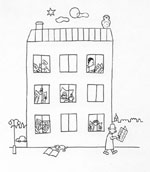

|

金庫破りと放火犯（抜粋）「盗みにはいるときにゃ、準備万端、ぬかりがあっちゃいけねえ」というのが、バラバーン氏の口癖でした。この金庫破りが最後にやらかしたのは、ショル工業の金庫でしたがね。このバラバーンというのは、そりゃあ、教養もあり、冷静な盗人でした。それに、もうかなり年を取っていましたから、それが彼に分別を与えたんでしょう。これほど経験ゆたかな盗賊はほかにはいませんよ。若い連中はどちらかというと無鉄砲ですがね、その無鉄砲さのおかげで何をやってもうまくいくんでしょうがね。
でも、人間、年を取って物ごとを考えるようになると、通常はその大胆さがだんだんなくなっていくんですな。そのかわり、十分考えたうえで事にあたるようになる。そこんところは、まあ、政治やその他もろもろのことにも当てはまりますね。
で、そのバラバーンはです、どんな仕事にもその仕事なりの「やり方」があるとはよく言ったものです。難攻不落の金庫にしても、これくらいの金庫破りになると、いつも単独で仕事をするんです。なぜって、誰かと組んでも足手まといになるだけだからだと。第二に、絶対に同じ地域で長期間にわたって仕事しないこと。第三には時代精神とともに進み、専門分野での最新技術をすべてマスターすること。しかし同時に、いわゆる伝統的手法をも軽んじることなく、その手法において、より高い技術水準を保つこと。なぜなら、より多くの人が同じ手法で仕事をすれば、それだけ警察にとっては犯人の特定が困難になるからです。そのバラバーンは、たとえ電気ドリルをもっていたとしても、また、溶接機をうまく使えたとしても、カナテコを絶対手放しませんでした。世間でさかんに喧伝されている最新式の鋼鉄張りの金庫に挑戦するなんてえのは、しょせん無駄な見栄、ないしは野心であると言っていました。
むしろ、彼が好んで仕事の対象に選んだのは、古いごっつい金庫でした。それに、入っているものも小切手とか株券とかいった類いのものではなく、相当額の現ナマが詰まっているような、そんな古いタイプの堅実一方の会社でした。彼は、慎重に選びぬかれた保証付きの道具類をすべてそろえていましたよ。
そのバラバーンはね、そのほかにも、古い真鍮工芸品の商売もしていましたし、不動産も扱っていました。それに馬の売買もしていました。そして、まったくのところ景気も上々のようでした。
そのバラバーンが言ったそうです。金庫破りは、もう、あとひとつにしよう。しかし、完璧な仕事にするつもりだ。若いもんは、そんなこと、気にもとめんだろうがな、と。それは、大金を得ようとするのが主目的ではなく、いちばん大事なのは、つかまらないことだそうです。
そこで彼が選んだ最後の金庫というのが、ショル工業のものだったのです。ほら、ブベニュにある町工場ですよ。警察の情報屋の一人、ピシュトラが話してくれましたがね、彼がそこでやった仕事はね、まったく名人芸とでもいうべきものだったそうですよ。
バラバーンは、中庭から窓を通って忍びこんだのです。まず、窓に取り付けた鉄柵をはずさなければなりませんでした。「そりゃ、もう、まさに一見の価値あり。思わず快哉を叫ばずにはいられなかったでしょうな」とピシュトラは言いました。鉄柵を取りはずしたその見事さからもわかるとおり、一筋の痕跡すら残さない。それほど完璧な仕事をするのです。例の金庫にしても、手に触れるやいなや、たちどころにそいつを開けました。たった一つの無駄な穴も、たった一本の条痕も、余計なもの、手がかりになりそうなものは、何一つ残っちゃいません。それどころか、金庫の塗装さえ、はげおちたようなところは見あたらないのです。「この男がいかに愛情をこめてこの仕事をしたかがわかるよ」とそのピシュトラが話してくれました。いまやその金庫は、あまりにも名人芸的な仕事のゆえに、金庫破りの最高のテクニカル・サンプルとして、警察博物館に保管されているそうです。（後略）
|